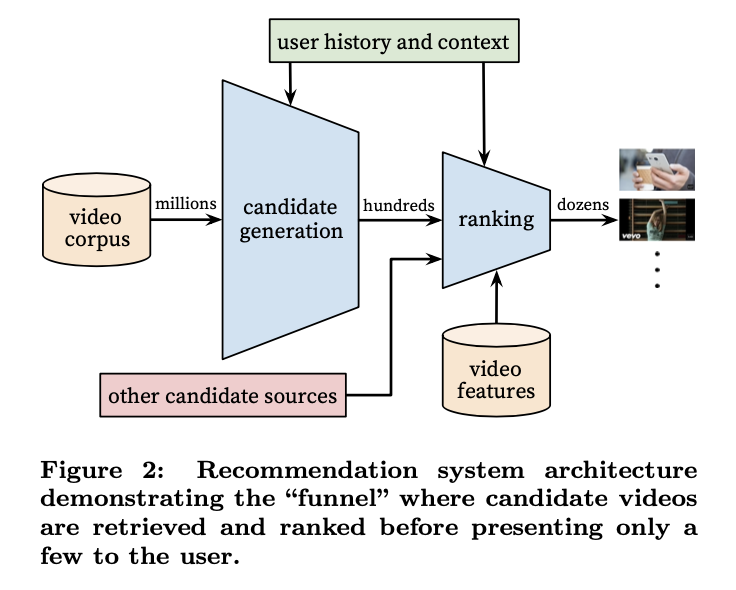

Recommendation Systems • Research Papers
- Introduction
- Apple
- DeepMind
- Alibaba
- TikTok
- Netflix
- DoorDash
- Snap Inc
- Friend Story Ranking with Edge-Contextual Local Graph Convolutions
- Graph Neural Networks for Friend Ranking in Large-scale Social Platforms
- Embedding Based Retrieval in Friend Recommendation
- Dynamic Ensemble of Contextual Bandits to Satisfy Users’ Changing Interests
- Embedding-based Retrieval with Two-Tower Models in Spotlight
- Multi-objective hyper-parameter optimization of behavioral song embeddings
- Background
- What the paper provides
- How it all works
- The Experiments
- TL;DR
Introduction
- Up until now, in all the sections previously, we’ve looked through many of the foundational elements of a recommendation system.
- We’ve talked about topics ranging from candidate generation, to ranking and re-ranking, to a hands-on music rec project coded using pyspark.
- Now, lets talk about the current research within this domain. As I make my way through more papers, I’ll keep updating this page with all the information I think is vital to share!
Apple
Controllable Music Production with Diffusion Models and Guidance Gradients
- Authors: Mark Levy, Bruno Di Giorgi, Floris Weers, Angelos Katharopoulos, and Tom Nickson from Apple.
- This paper demonstrates the use of conditional generation from diffusion models for various realistic tasks in producing 44.1kHz stereo audio music. It covers techniques like continuation, inpainting, regeneration of musical audio, smooth transitions between tracks, and stylistic transfer to audio clips. The method applies guidance at sampling time, combining reconstruction and classification losses, allowing the generated audio to match its context or conform to a class distribution.
- Key Contributions:
- Approach: Utilizing conditional generation with guidance gradients for high-quality music production.
- Techniques: Incorporating both reconstruction and classification losses for versatile audio generation.
- Applications: The paper covers applications such as audio continuation, inpainting, regeneration, and style transfer.
- Results: The generated audio can either match the existing context or adhere to specific class distributions or latent representations.
- Technical Innovation: The paper proposes a simple yet effective framework supporting both reconstruction and classification losses, which is novel in the context of music production using diffusion models.
- The paper represents a significant contribution to the field of music production, showcasing the potential of diffusion models in generating high-fidelity audio for a variety of creative applications.
Lyric document embeddings for music tagging
- Authors: Matt McVicar, Bruno Di Giorgi, Baris Dundar, and Matthias Mauch
- This paper looked to embedd lyrics for effective music tagging, using five methods for token-level and four methods for document-level embeddings, trained on an industrial-scale dataset.
- Implementation details:
- Word Embeddings:
- Baseline Models: Includes random embeddings, bag-of-words, and TF-IDF models.
- Custom-Trained Word2Vec: Utilizing Gensim, training on the dataset for optimized embeddings.
- Pre-Trained Word2Vec: Using Google News 300 dataset for a broad semantic understanding.
- Warm-Start Word2Vec: Merging vocabularies of custom and pre-trained models for enhanced initial states.
- Document Embedding Summaries:
- Methods include averaging word2vec embeddings, doc2vec, and sophisticated LSTM and attention-based neural architectures.
- These embeddings are evaluated on different tagging tasks including genre, mood, era, and explicit content detection.
- Tagging Framework:
- Multi-Label Tagging: A multi-task neural network architecture is used, where predictions on different tag vocabularies are treated as separate tasks.
- Multi-Task Tagging: Utilizing multiple datasets with distinct tag vocabularies and tasks, handling missing annotations while training in parallel.
- Datasets:
- Lyrics Dataset: Comprising over 17 million English language documents.
- Tagging Dataset: Includes manually curated datasets and metadata-derived datasets, spanning genres, moods, release dates, and more.
- Word Embeddings:
- Results and Findings:
- Word Embeddings: The study found that averaging word embeddings generally outperformed more complex architectures in many downstream metrics.
- Document Embeddings: Attention networks showed comparable or superior performance to word2vec in specific tasks like mood and explicit content tagging.
- Incremental Training: The study explored the impact of training set size on performance and found that increasing training set size beyond a certain point did not significantly improve tagging performance.
- The paper concludes that simple models trained on in-house data are hard to surpass in performance. Sequence modeling showed potential improvements, but results were not conclusive. The study also suggests exploring embeddings in languages other than English and their application in tasks like music recommendation.
DeepMind
Recommender Systems with Generative Retrieval
- Authors: Shashank Rajput, Nikhil Mehta, Anima Singh, Raghunandan Keshavan, Trung Vu, Lukasz Heldt, Lichan Hong, Yi Tay, Vinh Q. Tran, Jonah Samost, Maciej Kula, Ed H. Chi, Maheswaran Sathiamoorthy
- This paper proposes a new paradigm called TIGER (Transformer Index for GEnerative Recommenders) for retrieval in recommender systems using generative modeling rather than query-candidate matching.
- It represents each item as a Semantic ID, which is a tuple of semantic codewords generated by quantizing item content embeddings. This provides a compact and semantically meaningful representation.
- It also uses a Transformer sequence-to-sequence model that takes in user context and item interaction history, and predicts the Semantic ID of the next item token-by-token.
- The results show that they are able to outperform state-of-the-art baselines on sequential recommendation benchmarks, with gains of up to 29% in NDCG.
- Semantic ID representation enables new capabilities like cold-start recommendation and controlled diversity through temperature sampling.
- Codewords in Semantic IDs are hierarchical, with the first code capturing coarse categories and later codes refining granularity.
- Avoids needing large item embedding tables unlike dual-encoder methods. The Transformer memory acts as the retrieval index.
- While computationally heavier than approximate nearest neighbor search during inference, proposes a new direction of generative modeling for retrieval.
- The key innovation this paper introduces is using Semantic IDs with a sequence-to-sequence model for generative retrieval in recommender systems, achieving gains over traditional query-candidate matching approaches. The semantic representation enables new capabilities.
Alibaba
Behavior Sequence Transformer for E-commerce Recommendation
- Authors: Qiwei Chen, Huan Zhao, Wei Li, Pipei Huang, and Wenwu Ou.
- Alibaba, the largest e-commerce platform in China, uses a Transformer model to capture the reasons or signals for the users’ behaviour sequence in order to generate recommendations.
- Alibaba utilizes this recommender with an end goal of increasing their Gross Merchandise Volume (GMV) and revenues. To do so, they implement a two stage pipeline: match and rank. With matching, they take a set of similar items, depending on what the user interacted with, and then a fine-tuned prediction model is learned to predict the probability of the user clicking the candidate item.
- This paper, however, delves deeper into the ranking stage, which is built on top of Google’s Wide and Deep Learning model, which is when the model runs the recommendation task as ClickThrough Rate (CTR) prediction problem.
- The architecture below (source) shows the high level architecture of Behavior Sequence Transformer (BST).
- BST first starts by embedding previously clicked items and related features into low dimensional vectors. There are a multitude of features, such as user profile features, item features, context features, and the combination of features or cross features.
- The Transformer layer learns a deeper representation of each item by capturing relationship of each item in the behavior sequence the LeakyReLU layers are used along with dropout to avoid overfitting.
- Then, to predict whether the user will click on the target item or not, BST models it as a binary classification problem which is why the sigmoid function is used.
- Using the transformer architecture has allowed BST to capture sequential relations.
TikTok
Deep Retrieval: Learning A Retrievable Structure for Large-Scale Recommendations
- Authors: Weihao Gao, Xiangjun Fan, Chong Wang, Jiankai Sun, Kai Jia, Wenzhi Xiao, Ruofan Ding, Xingyan Bin, Hui Yang, and Xiaobing Liu.
- Recommendation systems usually first learn an inner-product model and then use some approximate nearest neighbor search algorithm to find the top candidate. In this paper, TikTok introduces Deep Retrieval, a novel approach to accurately retrieve top candidates in sub-linear time. TikTok aims to learn a retrievable structure directly from the user-item interactions, such as clicks, in lieu of the Euclidean space assumption in approximate nearest neighbor (ANN) algorithm. In other words, unlike traditional approaches that utilize Approximate Nearest Neighbor algorithms with Euclidean space, TikTok’s Deep Retrieval encodes candidates into a discrete latent space for more efficient and effective recommendations.
- Deep Retrieval takes in a user and returns candidates for that user by doing the following:
“1) A user ID is converted into its latent representation from an embedding table. 2) The Deep Retrieval model learns the latent representations of related items. 3) The item representations are mapped back to the items themselves.” (source)
- The architecture diagram below (source) depicts the Deep Retrieval (DR) system in more detail.
- The basic DR model has D layers, each layer consisting of a multilayered perceptron (MLP) with a softmax function over \(K\) nodes that outputs the probability of the \(K\) cluster it belongs to.
- “The input to layer \(D1\) is an embedding of the user( embedding takes into account their previous actions, and a recurrent neural network with GRU is used to project the behavior sequence onto a fixed dimension embedding as the input). The target is the cluster of the item with which the user has interacted with (e.g., clicked or purchased). The output of \(D1\), let’s call it \(K1\), is then concatenated with user embedding and used as input for \(D2\). An output \(K2\) is then concatenated with \(K1\) and user embedding and used as an input for \(D3\).” (source)
- As we saw earlier, DR has up to \(K\) clusters and an advantage with DR is that any item can belong to multiple clusters, which is accomplished by its tree-based deep model structure.
- For example, kebab would belong to food cluster where flowers would belong to gift cluster. However, chocolates could belong to both the former clusters.
- So how are the original clusters determined? In the first iteration, the clusters are distributed randomly and we train the model.
- Then, we re-train the items mapping to the cluster to maximize the model’s output.
- So then how does DR work during inference? In the inference, we need to retrieve items from DR given user embeddings as input.
- To do so, DR uses beam search to retrieve the most probable path by selecting the top B nodes in each layer.
- “We input the user’s embedding -> we get \(N\) paths (the greedy algorithm outputs one path)
- We gather all items that are in these paths
- We run them through the intermediate reranker” (source)
- To do so, DR uses beam search to retrieve the most probable path by selecting the top B nodes in each layer.
Monolith: Real Time Recommendation System With Collisionless Embedding Table
- Authors: Zhuoran Liu, Leqi Zou, Xuan Zou, Caihua Wang, Biao Zhang, Da Tang, Bolin Zhu, Yijie Zhu, Peng Wu, Ke Wang, and Youlong Cheng.
- Monolith is a real-time recommender, that trains in real-time, with collision-less embedding table.
- “A collisionless embedding table is a type of data structure that is used to store information in a way that minimizes the chances of two pieces of information colliding or conflicting with each other. This is often done by using a hashing algorithm to map data to specific locations in the table, which reduces the likelihood of two pieces of data being stored in the same location.”YCombinator
- Monolith uses the most recent data to update the model as soon as possible. This allows it to provide personalized recommendations for each user in real-time.
- They key benefit of this architecture is it reduces memory footprint with collision-less embedding table using optimizations like expirable embeddings embedding and frequency filtering.
- Reference Haneul Kim’s blog
Netflix
The Netflix Recommender System: Algorithms, Business Value, and Innovation
- Authors: Carlos A. Gomez-Uribe and Neil Hunt.
-
The image above is from source.
- “Historically, the Netflix recommendation problem has been thought of as equivalent to the problem of predicting the number of stars that a person would rate a video after watching it, on a scale from 1 to 5.”Original Paper
- This paper details the algorithms that Netflix’s recommender uses to solve the above problem. Let’s take a deeper look:
- i) Personalized Video Ranker (PVR):
- Genre recommendations for each member on Netflix’s home page are driven and individualized by PVR.
- “The resulting ordering is used to select the order of the videos in genre and other rows, and is the reason why the same genre row shown to different members often has completely different videos”.Original Paper
- ii) Top-N Video Ranker:
- This algorithm is used to determine each users ‘Top Picks’ row and find a few, best personalized recommendations for each member.
- This entails focusing only on the head of the ranking.
- iii) Trending Now Ranker:
- This algorithm captures more temporal trends that can be short-term lasting from a few minutes to a few days.
- These can also capture seasonal trends and be repeated, for example, showing more Santa movies during Christmas.
- iv) Continue Watching Ranker:
- “Most of our rankers sort unviewed titles on which we have only inferred information. In contrast, the continue watching ranker sorts the subset of recently viewed titles based on our best estimate of whether the member intends to resume watching or rewatch, or whether the member has abandoned something not as interesting as anticipated.” Original Paper
- This ranker calculates the probability of whether the member will continue watching the current series with accordance to other signals such as time elapsed since viewing, point of abandonment etc.
- v) Video-Video Similarity Ranker:
- The ‘Because You Watched’ (BYW) row on Netflix’s homepage is another type of categorization.
- My best guess is this is similar to content-based filtering as it’s doing an item to item recommendation via similarity matrix.
- vi) Page Generation: Row Selection and Ranking:
- The image above is from source.
- Page generation uses the recommendations produced from all the above listed algorithms and decides how each page is constructed with relevance and diversity of each row and page taken into consideration.
- “So, how does Netflix decide which of these 10,000s of rows to display after these algorithms generate different rows (already ranked within each row vector)? For this Netflix used a template-based approach. This tackles the problem of Page Generation i.e. which rows to include in user’s interface.”source
- vii) Evidence Selection:
- Evidence selection algorithms work together with the above recommendation algorithms to help Netflix members decide if the video is right for them.
- “For example, evidence algorithms decide whether to show that a certain movie won an Oscar or instead show the member that the movie is similar to another video recently watched by that member; they also decide which image out of several versions use to best support a given recommendation.” Original Paper
- viii) Search
- Finally, 80% of Netflix’s recommendations come from its home page while 20% come from it’s search.
- Often, when users search Netflix for an actor or a movie that is not available on the platform, instead of offering no content, Netflix shows the next best option.
- Other than this, the search algorithm is also responsible for showing recommendations as the user is typing real-type:
- “The search experience is built around several algorithms.
- One algorithm attempts to find the videos that match a given query, for example, to retrieve Frenemies for the partial query “fren.” Another algorithm predicts interest in a concept given a partial query, for example, identifying the concept French Movies for the query “fren.”
- A third algorithm finds video recommendations for a given concept, for example, to populate the videos recommended under the concept French Movies.
- Our search algorithms combine play data, search data, and metadata to arrive at the results and recommendations that we offer. Original Paper
Talent Search and Recommendation Systems at LinkedIn: Practical Challenges and Lessons Learned
- Authors: Sahin Cem Geyik, Qi Guo, Bo Hu, Cagri Ozcaglar, Ketan Thakkar, Xianren Wu, and Krishnaram Kenthapadi.
- It seems fitting that LinkedIn’s information retrieval, search and recommendation systems focus on talent search.
- “We require not just that a candidate shown must be relevant to the recruiter’s query, but also that the candidate contacted by the recruiter must show interest in the job opportunity” Original Paper
- LinkedIn’s architecture for talent search is a mixture of both:
- Online system architecture:
- Works on gathering the query from the recruiter and ranking it against the candidate’s search and qualifications.
- Offline modeling pipeline:
- “Our offline system periodically trains the ranking models using recruiter usage logs. The training data is generated from recruiter interactions (and candidate responses to recruiter messages) over the search results displayed” Original Paper
- Online system architecture:
DoorDash
Powering Search & Recommendations at DoorDash
- Authors: Aamir Manasawala and Mitchell Koch.
- Like most recommenders, DoorDash’s challenges include sparsity (as not every consumer can see every store), cold-start problem (new stores or consumers enter the system) as well as tradeoff between relevance versus diversity.
- DoorDash’s recommender system uses a hybrid approach with a combination of collaborative filtering and content-based filtering to make personalized restaurant recommendations for users.
- Collaborative filtering is a technique that uses the past behavior and preferences of similar users to make recommendations.
- Content-based filtering uses information about the restaurants themselves, such as the cuisine or location, to make recommendations.
- DoorDash’s system also takes into account factors such as the time of day and the user’s location to make more relevant recommendations.
- The goal of the system is to present users with a selection of restaurants that are tailored to their individual tastes and preferences, making it more likely that they will find something they will enjoy.
Deep Neural Networks for YouTube Recommendations
- Authors: Paul Covington, Jay Adams, and Emre Sargin.

- The above image, taken from the original paper, illustrates the overall architecture of the YouTube recommender system.
- The system comprises of two neural networks, one for candidate generation and one for ranking.
- The candidate generation neural network offers broad personalization via collaborative filtering and takes in the users YouTube activity history as input.
- The predecessor to this was a matrix factorization approach trained with rank loss.
- The ranking network then presents a few best refined recommendations in a list with high recall.
- The ranking network scores each video according to a desired task/objective function and the highest scoring videos are shown to the user.
- “During development, we make extensive use of offline metrics (precision, recall, ranking loss, etc.) to guide iterative improvements to our system. However for the final deter- mination of the effectiveness of an algorithm or model, we rely on A/B testing via live experiments.”original paper
- Now lets talk a bit about the model’s architecture:
- The model learns high dimensional embeddings for each video in a fixed vocabulary and feeds them into a feedforward neural network.
- User’s watch history is kept track of by a variable-length sequence of sparse video ID’s mapped to dense vector representation via the embeddings.
- The embeddings are trained jointly in a multimodal way with strategies such as sum, component-wise max etc. along with model parameters via gradient descent and backpropogation.
- In the image below, from the original paper, we see the architecture of the candidate generation showing embedded sparse features with the dense features.
- Similarly with ranking, “We use a deep neural network with similar architecture as candidate generation to assign an independent score to each video impression using logistic regression”original paper
Wide & Deep Learning for Recommender Systems
- Authors: Heng-Tze Cheng, Levent Koc, Jeremiah Harmsen, Tal Shaked, Tushar Chandra, Hrishi Aradhye, Glen Anderson, Greg Corrado, Wei Chai, Mustafa Ispir, Rohan Anil, Zakaria Haque, Lichan Hong, Vihan Jain, Xiaobing Liu, and Hemal Shah.
- This research explores the problem of whether we can teach computers to learn as humans do.
-
Inorder to solve this, they chose to use joint training of a wide linear model (for memorization) as well as a deep neural network (for generalization) thus becoming the “Wide & Deep Learning”.
- Note: All the images below are from Google Research and belong to them.
- Above, we see the architecture of the Wide and Deep network leveraged from Google Research.
- Let’s break down how each of these models work individually and together.
- The Wide model: this model is able to memorize very well the co-occurrence of query-items features based on your target label.
- The Deep model: motivates the “surprise me” recommendation which is close to previous preferences, however is more generalized rather than memorized. For example: recommending a burger to someone who likes hot dogs.
- Wide and Deep model: Using these models in silos may either cause you to have only highly memorized model, or very generalized recommendations. Using both would be the better approach here.
- In order to do that, the query will be submitted to both, the wide and deep model.
- “During training, the prediction errors are backpropagated to both sides to train the model parameters. The cross-feature transformation in the wide model component can memorize all those sparse, specific rules, while the deep model component can generalize to similar items via embeddings.” Google Research.
Pixie: A System for Recommending 3+ Billion Items to 200+ Million Users in Real-Time
- Authors: Chantat Eksombatchai, Pranav Jindal, Jerry Zitao Liu, Yuchen Liu, Rahul Sharma, Charles Sugnet, Mark Ulrich, and Jure Leskovec.
- In this paper by Eksombatchai et al. from Pinterest have generated a GNN based, real-time recommendation system called Pixie.
- Pixie is able to recommend in real time by utilizing Pixie Random Walk algorithm and is able to generate recommendations in less than 60 milliseconds.
- GNN based recommenders often use the Random Walk algorithm, however, what differentiates Pixie is that it’s able to work on very large data and utilize the Pinterest object graph of 3 billion nodes and 17 billion edges.
- Additionally, Pixie is able to recommend more than 3 billion items to over 200 million users. It uses a combination of collaborative filtering and content-based techniques to generate recommendations for users.
- One of the key challenges in building a recommendation system at such a large scale is the need to efficiently process and store a vast amount of data.
- Pixie uses a number of techniques, including data compression and indexing, to optimize its performance.
- Pixie is able to recommend content based on multiple, previous random walks and is able to reinforce/reward behavior where the recommendation was valid for multiple queries.
- Pixie Random Walk also has enabled early stopping which allows it to not overfit to any particular dataset. However, one of the biggest advantages to Pixie’s Random Walk algorithm is the fact that it can apply constructive bias to the walk.
- For example, it can control the length of the walk or can choose to bias the walk via a users demographic details.
- This recommender system can be seen live today on Pinterest when you click on a pin and see related pins.
PinSage: Graph Convolutional Neural Networks for Web-Scale Recommender Systems
- Authors: Rex Ying, Ruining He, Kaifeng Chen, Pong Eksombatchai, William L. Hamilton, Jure Leskovec
- The paper discusses non-euclidean domain, specifically graphs, that are leveraged for Pinterest.
- PinSage is a graph convolutional neural network (GCN) model developed for learning embeddings for nodes in web-scale graphs containing billions of objects. It uses a random-walk sampling approach to construct the neighborhoods of each node and perform graph convolutions on them. The model can scale to very large graphs and is designed for use in recommender systems, where the nodes correspond to items and the edges correspond to user-item interactions. PinSage has shown promising results in improving the recommendation accuracy and efficiency compared to traditional methods.
- PinSage creates dense vector representations of nodes or Pins and connects them in a large graph. When the Pins borrow information by nearby nodes, the resulting embedding of the node becomes more accurate and robust.
- Pinterest is modeled as a bipartite graph consisting of nodes in two disjoint sets, Pins and boards.
Snap Inc
Friend Story Ranking with Edge-Contextual Local Graph Convolutions
- In this work, the authors are studying the problem of ranking friend stories on a social network, which is a link ranking task. They are interested in making inferences about existing links (relations) between friends, rather than predicting new links. This is different from common tasks in graph representation learning, which focus on node or graph-based tasks, or link prediction tasks, which aim to predict new links in a network. Essentially, the authors are trying to rank the importance or relevance of existing links between friends, rather than predicting new links that may form in the future.
- They leverage ELR which is a graph embedding approach that aims to address social sparsity challenges by taking into account local graph structure, differences between local edge types and directionality, and rich edge attributes. It builds on the backbone of graph convolutions, a popular technique for learning graph embeddings.
- Edge-contextual Local Graph Convolutions for Friend Story Ranking or ELR is introduced by Snap, and it uses a method called edge-contextual approach, which means it considers the local graph structure, including the surrounding nodes and the multiple edge types that connect them. By incorporating rich edge attributes, ELR can differentiate between different types of edges and take into account their directionality.
- To delve deeper into ELR, here are it’s characteristics as per the paper “..(i) utilizes local neighborhood information, (ii) heavily leverages edge attributes (ii) differentiates relation types, and (iv) attends over neighbors to learn predict Friend Story affinity.”
- To deal with social sparsity challenges, where some nodes have few connections, ELR considers and attends over neighboring nodes, allowing it to learn more robust embeddings even in sparse regions of the graph.
- Preliminaries:
- “Social Network: We consider a social network to be described by a graphG,where nodes are defined over a set of registered users V,and edges are defined over dyadic ties between users (commonly called edges or links) E, reflecting friendships on the platform.”
- ‚ÄúThe ego network (egonet) [10] of ùë¢ is a subgraph of the whole social network graph G. Nodes in the egonet include the focal node (ego) ùë¢ and neighbors N (ùë¢) (alters).‚Äù
- “Friend Story Affinity: Friend Story affinity measures the possibility of a user engaging with a friend’s Stories.” Affinity score is used to quanitfy the engagement.
- This is how to friends story ranking problem is defined:
- ‚ÄúProblem(FriendStoryRanking). Given graphG(V,E),node features X and edge features E, design a model to predict the future Friend Story affinity score ùë†ùë¢ùë£ for each (ùë¢,ùë£) ‚àà E.‚Äù
- The authors here share how a tabular model approach falls short in addressing the Friend Story Ranking (FSR) problem, which involves predicting the affinity between two users based on their local communities and interactions. Instead, the authors propose an edge-contextual approach called ELR that utilizes graph representation learning to incorporate information from neighboring nodes, edges, and their features into the inference. This approach takes into account social factors beyond the relation of interest, such as shared friends, to improve the assessment of the future affinity between two users. The ELR model is designed to differentiate multiple types of relationships and use self-attention over neighbors to improve learning over sparse user activity.
- ‚ÄúThe local graph encoding module leverages a GNN-inspired neural network to learn representations for both users and relations in the local community graph; the friendship categorization module differentiates three types of relations including pairwise relation, intra-ego relation and inter-ego relation according to their relative locations and status in the local graph. Finally, the affinity score prediction module jointly utilizes the three types of relations to predict the affinity score ùë†ùë¢ùë£.‚Äù source
- “To capture complex associations between nodes, their features and interactions, our first step is to encode the edge-contextual graph into Euclidean space. To this end, we utilize a GNN-based encoding scheme. We adopt GraphSAGE [16] as our GNN model because of its scalability in industrial scenarios [57]” source
- Link based affinity is important for ELR.
- “User Representation. We can generally capture multiple orders of graph proximity using multiple Edge-GNN layers. In practice, we use two Edge-GNN layers on the edge-contextual graph input to ensure that both first-order and second-order proximity are considered.”
- ‚ÄúLink Representation. Given a link (ùë¢, ùë£), we use the corresponding pairwise edge features eùë¢ùë£ and the associated user representations from the edge-contextual graph, hùë¢ and hùë£ to characterize the link between users.‚Äù
- Friendship Categorization is done by predicting friend’s storys affinity score. The authors assume Friend Story affinity is correlated to pairwise relation between the two users because frequent historical data of engagement between the two will indicate likeliness of watching the stories.
- Intra-ego: ‚Äúùë¢ shares similar affinity to ù룂Äôs stories as his/her first-order friends;‚Äù
- Inter-ego: ‚Äúthe level of interest from ù뢂Äôs friends towards stories ofù룂Äôs friends can implyù뢂Äôs interest in ù룂Äôs stories, due to properties of homophily and shared preferences between friends‚Äù
- ‚ÄúLastly, we predict the Friend Story affinity score by jointly modeling the pairwise relation, intra-ego relations and inter-ego relations. To construct a complete view of the edge-contextual graph, We first concatenate the three types of representations, then use a neural network ùúë(¬∑) to generate the predicted score: ùë†ÀÜùë¢ùë£ =ùúë(rùë¢ùë£ ‚äïrùë¢+‚äïrùë£+‚äïrùë¢ùë£+). (9) we use mean square error as the loss function:‚Äù
- “We use mean square error (MSE) and mean absolute error (MAE) as the evaluation metrics for all compared methods.We treat the ranking task as a pointwise prediction one. In general, lower MSE/MAE also strongly correlate with traditional ranking metrics given our observations. We note that we could also adapt our task to a listwise or pairwise ranking setting, but do not discuss these aspects in our work for simplicity. Note that we do not directly predict/optimize mean reciprocal rank (MRR) and/or normalized discounted cumulative gain (NDCG) of the ranked friend stories.”
- ELR is running inference over an existing network links rather than inferring missing or future ones.
- “In this work, we study the problem of Friend Story Ranking (FSR). FSR is an instantiation of a more general link ranking problem, tasked with inference over existing network links, rather than inferring over missing or future ones. We tackle the problem from a graph representation learning perspective, building upon recent advances in GNNs in the ELR model.
- We incorporate socially-motivated intuitions into our model design, focusing our inference to a localized edge-contextual graph for each targetlink forinference, emphasizing importance of edge attributes in user-user relationships in message passing, while also learning distinguished representations across different types of pairwise, intra-ego, and inter-ego relations in local graph structure, and carefully attending over nodes in deriving these representations to overcome social interaction sparsity. Through extensive experiments, we show ELR outperforms baselines with an impressive 8% error reduction in Friend Story CTR prediction. We further show ELR’s generality, the relative importance of modeling components, and qualitative findings.”
Graph Neural Networks for Friend Ranking in Large-scale Social Platforms
- Authors: Aravind Sankar, Yozen Liu, Jun Yu, and Neil Shah
- The authors discuss the application of Graph Neural Networks (GNNs) for friend suggestion, specifically in the context of large-scale social platforms. The authors highlight the challenges of modeling user-user interactions in such platforms, including heavy-tailed degree distributions, limited structural and engagement information for inactive users, and diverse interaction patterns.
- To address these challenges, the authors propose GraFRank, a neural architecture that leverages GNNs to learn expressive user representations from multiple feature modalities and user-user interactions. GraFRank incorporates modality-specific neighbor aggregators and cross-modality attentions to capture the multi-faceted nature of user interactions.
- Experiments conducted on large datasets from Snapchat demonstrate the effectiveness of GraFRank compared to state-of-the-art approaches. GraFRank outperforms existing methods in candidate retrieval and ranking tasks, improving Mean Reciprocal Rank (MRR) by 30% and 20%, respectively. The qualitative analysis also highlights the significant gains achieved for less-active and low-degree users, indicating the potential of GraFRank to improve friend suggestions for critical user populations.
- The excerpt highlights the significance of learning latent user representations in enhancing user understanding and its widespread adoption in various industrial applications. Deep models have proven to be effective in learning user representations, replacing or complementing traditional collaborative filtering methods. These learned representations have versatile applications, such as suggesting friendships and inferring profile attributes like age and gender in social networks.
- Latent user representation refers to a learned, low-dimensional representation of users in a recommender system or any other user-centric application. It aims to capture the underlying characteristics, preferences, and behaviors of users in a compact and meaningful way. These representations are typically derived using machine learning techniques, such as deep learning models or matrix factorization methods.
- The term “latent” refers to the fact that these representations are inferred or learned from observed user data, such as user interactions, preferences, or demographic information, without explicitly specifying or knowing the exact features that define a user. Instead, the model uncovers hidden patterns or factors that explain the observed user behavior. By capturing these latent factors, the representations can capture complex relationships and similarities between users, facilitating various downstream tasks such as personalized recommendations, user clustering, or user profiling.
- In this work, the authors address the challenges of structural and interactional sparsity in friend recommendation on social networks. We leverage the diverse in-platform actions and formulate friend recommendation as a multi-faceted friend ranking problem on an evolving friendship graph. Our approach incorporates multi-modal user features and link communication features.
- To represent users, the authors utilize heterogeneous feature sets that include static profile attributes and time-sensitive in-platform activities. They also consider pairwise link features that capture recent communication activities within the platform. Through an empirical analysis, the authors investigate attribute homophily and cross-modality correlations to gain insights into friendship formation.
- Based on their observations, the authors propose GraFRank (Graph Attentional Friend Ranker), an end-to-end Graph Neural Network (GNN) architecture for multi-faceted friend ranking. GraFRank learns user representations by aggregating neighborhood information specific to each modality and incorporating friendship attentions. They handle the heterogeneity in modality homophily by employing modality-specific neighbor aggregators. Furthermore, they introduce a cross-modality attention module to capture non-linear correlations across modalities and compute the final user representation.
- By combining these techniques, the authors’ proposed GraFRank enables effective friend ranking by considering various factors impacting friendship formation and leveraging the rich knowledge of user interactions within the social network.
- The image below shows the multi-modalities used in this framework:
-
“Profile Attributes: a set of (mostly) static demographic features describing the user, including age, gender, recent locations, languages, etc., that are listed or inferred from their profile. • Content Interests: a real-valued feature vector describing the textual content (e.g., posts, stories) interacted by the user within the platform, e.g., topics of stories viewed by the user on Snapchat. • Friending Activity: aggregated number of sent/received friend requests, reciprocated friendships, and viewed suggestions of the user in different time ranges (e.g., daily, weekly, and monthly). • Engagement Activity: aggregated number of in-app direct and indirect engagements for the user (e.g., text messages, snaps, and comments on posts) with other friends in different time ranges”
- The authors describe the different information sources relevant to friend suggestion in a social platform. Each individual user is denoted by ùë¢ or ùë£, and a friendship between two users is represented as an undirected relationship. The authors assume a set of users, denoted as V, existing in the platform until the latest observation time. The friendship graph, denoted as G, evolves as new users join the platform and new friendships form.
- Traditionally, dynamic networks are represented as a sequence of static snapshots due to scaling concerns. However, this approach may not capture the continuous-time nature of the network accurately. To address this, the authors propose a hybrid data model that combines the expressiveness of a continuous-time dynamic graph with time-aware features recorded at different time scales.
- The friendship graph G is represented as a continuous-time dynamic graph (CTDG) that records friendship creation events at the finest temporal granularity. The features associated with users and edges are represented as a sequence of daily snapshots, where time-sensitive features, such as engagement activity, are recorded at different time scales.
- The authors define the friendship graph G as a timed sequence of friend creation events over a time range (0, ùë°ùëí). Each friendship link (edge) ùëí = (ùë¢, ùë£, ùë°) is assigned a unique timestamp ùë° that represents the link creation time. The function T maps each timestamp ùë° to a corresponding snapshot index in the range [0, ùëÜ], where ùëÜ is the number of daily snapshots. The friendship graph G includes all friendships with time-stamped links in the interval (0, ùë°ùëí). The temporal neighbors of a user ùë£ at time ùë° are defined as the set of friends created before ùë°, denoted as ùëÅùë°(ùë£).
- By representing the friendship graph as a continuous-time dynamic graph and incorporating time-aware features, the authors aim to capture the temporal dynamics of the social network and leverage this information for friend suggestion.
- The authors found correlation between cross modalities.
Embedding Based Retrieval in Friend Recommendation
- Authors: Jiahui Shi, Vivek Chaurasiya, Yozen Liu, Shubham Vij, Yan Wu, Satya Kanduri, Neil Shah, Peicheng Yu, Nik Srivastava, Lei Shi, Ganesh Venkataraman, Jun Yu
- The authors mention that in online social and professional networks, the connections or friends that a user has play a crucial role in their engagement and retention. Studies have shown that having a certain number of connections from different companies can positively impact job transitions. Friend recommendation, which aims to suggest new connections to users, can be viewed as a link prediction problem. The goal is to predict the formation of new links in a social network based on a snapshot of the network at a previous time.
- However, in the context of large-scale online networks with hundreds of millions or even billions of users, evaluating the likelihood of links between every pair of users becomes computationally infeasible. Therefore, in practice, friend recommendation is typically treated as an industrial recommendation problem and follows a two-tier architecture: Retrieval and Ranking.
- The retrieval tier is responsible for quickly selecting a subset of potential candidates from the large user pool, narrowing down the search space. This step typically involves efficient algorithms and data structures to filter and retrieve potential friends based on certain criteria or constraints.
- Once the candidate pool is retrieved, the ranking tier comes into play. This tier aims to determine the order or ranking of the potential friends based on their likelihood of being a good match or recommendation for the user. Various techniques, such as machine learning models or recommendation algorithms, can be employed to rank the candidates and provide personalized friend recommendations to users.
- “These candidates are then ranked based on either heuristics or lightweight machine learning (ML) models, and roughly the top ten-thousand candidates are funneled to the next phase of ranking.
- The goal of the retrieval phase is to include as many potential friends as possible to the next phase and recall is used to measure its effectiveness (i.e. the ratio of the number of relevant candidates retrieved to the number of all relevant candidates).”
- ‚ÄúIn the ranking phase, we rank retrieved candidates with a heavier deep neural network machine learning (ML) model, and send the top-ùêæ friend recommendations to the end users where ùêæ is in the order of hundreds.
- The ranker ML model is trained on historical friend recommendation outcomes and uses both user-level and user-to-user interaction features as signals to rank friend candidates. Different from the retrieval phase, the goal of ranking phase is to maximize precision, which measures the fraction of candidates surfaced to the users which they find relevant and worthwhile to friend request.
- This two-tier recommendation system advantageously sidesteps quadratic complexity from considering all user-user pairs, while also enabling flexible trade-offs in recall, precision and infrastructure cost.”
- The authors also note that retrieving friend recommendations in homogeneous graph-based friend recommendation systems presents unique challenges compared to product or content recommendations that rely on heterogeneous graphs. Traditional retrieval approaches based on user demographics and historical engagement are not effective in this context.
- Graph traversal approaches, such as the Friends-of-Friends (FoF) algorithm, have been widely used in online social and professional networks like LinkedIn and Facebook. FoF traverses the graph using breadth-first traversal and an inverted index for fast querying. While effective, there are several challenges with this approach. In low-density networks with limited user adoption, FoF struggles to find high-quality friend candidates, leading to cold-start problems. Additionally, due to the small-world network properties, going beyond 2-hop connections becomes computationally expensive and can increase recommendation latency. Furthermore, FoF does not capture graph topology or connection strength well, requiring additional mechanisms for finding and ranking the top candidates for further recommendation stages.
- Retrieval in homogeneous graph-based friend recommendation systems faces challenges related to cold-start problems, scalability in terms of hop connections, and capturing relevant graph topology and connection strength. Overcoming these challenges is essential to provide high-quality friend recommendations in real-time recommendation systems.
- The authors proposed a new retrieval system for friend recommendation called Embedding Based Retrieval (EBR) to address the challenges in friend recommendation systems. EBR, widely used in content and product recommendation systems, leverages low-dimensional embeddings of nodes in large graphs to retrieve relevant items. In the context of friend recommendation, the authors generate embeddings for each user based on their rich information and friend connections. Users who are likely to be friends are closer in the embedding space. During online retrieval, the authors retrieve candidates as nearest neighbors to the target user’s embedding.
- EBR overcomes limitations of graph traversal-based retrieval in several ways. First, the nearest-neighbor search in the embedding space is highly efficient, regardless of network density. Its time complexity remains constant. Second, EBR can retrieve high-quality candidates that may be multiple hops away from the target user, eliminating the need for cumbersome graph traversal.
- The authors utilized Graph Neural Networks (GNNs) to generate user embeddings and implemented infrastructure optimizations to support EBR for friend recommendation at Snapchat scale in a cost-effective manner.
- Retrieval (EBR) in Snapchat’s friend graph. They utilize Graph Neural Networks (GNNs), which are known for learning representations over graph data, to embed users. GNNs extend convolutions to graphs and have been successful in various industrial tasks, including recommendation and forecasting.
- The authors employ a 2-layer GraphSAGE model, where aggregation is performed through mean-pooling and updating involves vector concatenation followed by a linear layer. The model is trained using a transductive link prediction setup with a max-margin ranking loss. The training is done in a large-scale setting, and scalability challenges are addressed through graph preprocessing, minibatch training, and a producer-consumer shared-memory setup.
- To train the model, an internal framework is used, and training and inference are performed using a powerful virtual machine with CPUs and GPUs. Daily user embedding generation for hundreds of millions of Snapchat users is operationalized using this setup, and embedding quality is closely monitored based on offline ranking metrics.
- The authors emphasize the importance of user embedding quality, utilize GNNs for embedding generation, address scalability challenges, and ensure tight monitoring of embedding quality in the EBR system for friend recommendation at Snapchat scale.
- The first optimization involves indexing only active users, significantly reducing the index size. Since most friend links are established among active users, indexing only them is sufficient. Even after this pruning, the index remains large, around 2 terabytes in size. The authors then exploit the fact that a majority of friend links are established between users who are geographically closer together. They divide the index into segments based on geographic locations, such as North America, Europe, MENA, Asia, etc. This reduces the index size to a manageable memory footprint.
- Additionally, instead of sending queries to all indexes, the authors direct the requests to the geographic partition based on the searcher’s location. This approach keeps the query latency low while capturing the majority of friending activities. By capitalizing on these characteristics of the friend graph, the authors have built a more scalable, robust, and cost-effective system, achieving significant business impact. The embedding query workflow is illustrated in Figure 2.
- Snapchat’s EBR system optimizes candidate generation by indexing only active users, dividing the index based on geographic locations, and directing queries to the relevant partition. These optimizations result in a more efficient system with reduced resource requirements and improved performance.
Dynamic Ensemble of Contextual Bandits to Satisfy Users’ Changing Interests
- Authors: Qingyun Wu, Huazheng Wang, Yanen Li, and Hongning Wang
- The authors of this passage focus on addressing the challenges faced by recommender systems in highly non-stationary environments. They emphasize that traditional solutions, which periodically rebuild their models, are computationally expensive and cannot automatically adapt to abrupt changes in trends caused by timely information. Furthermore, they acknowledge that the changes in reward distributions resulting from a non-stationary environment can be context-dependent.
- To overcome these challenges, the authors propose utilizing contextual bandit algorithms for adaptive recommendations. They capitalize on the context-dependent property of reward changes to handle the non-stationary environment effectively. Specifically, they maintain a dynamic ensemble of contextual bandit models and monitor the reward estimation quality of each model based on the given context and potential environment changes. Only the models that are deemed suitable for the current environment are used for making recommendations.
- The authors provide a rigorous upper regret bound analysis of their proposed algorithm, which assesses the trade-off between exploration and exploitation in decision-making and provides guarantees on the quality of recommendations. They also conduct extensive empirical evaluations on both synthetic and real-world datasets to validate the algorithm’s performance. The results confirm that the proposed approach outperforms existing non-stationary solutions that rely on creating new models whenever an environment change is detected.
- Traditional approaches like content-based filtering, collaborative filtering, and hybrid methods rely on users’ past activities to provide recommendations. However, in practical applications such as news recommendation, both content popularity and user interests evolve frequently over time, making traditional offline learning approaches ineffective.
- To address this dynamic nature of recommendations, contextual bandit algorithms have emerged as online learning solutions. They collect real-time user feedback to estimate the utility or reward of new content based on available context information. Contextual bandits offer a principled way to balance exploration and exploitation in recommendations and have been successfully deployed in practical scenarios. However, most existing contextual bandit algorithms assume a stationary environment, where the expected reward on each option remains fixed based on the given context. This assumption rarely holds in real-world applications, where the reward mapping undergoes changes due to various factors.
- The work described in this paper focuses on a setting where there are unknown and abrupt changes in user preferences. Between consecutive changes, the reward distribution remains stationary but unknown, meaning it is piecewise stationary. Existing bandit algorithms address this dynamic environment by either introducing a forgetting mechanism to downweight historical observations or creating a new bandit model for each detected stationary period.
- However, the authors recognize that user interests can be context-dependent, even though they may change frequently. For example, while a user’s overall interests may evolve, their preference for a specific type of item may remain stable over a longer period. The authors emphasize that existing strategies fail to consider this context-dependent property of the non-stationary environment.
- The passage describes the authors’ contextual bandit algorithm designed to capitalize on the unique property of a changing environment in the context of user interest changes. The algorithm consists of a dynamic set of contextual bandit models called bandit experts, which estimate the underlying reward distribution. Additionally, there are bandit auditors that monitor each expert’s reward estimation quality in specific contexts.
- During the interaction process, an ensemble of admissible bandit experts is created based on the predictions of the auditors. These experts estimate the reward of each arm, and the arm with the highest upper confidence bound is selected as the recommendation. The feedback acquired from the chosen arm is used to update the admissible bandit experts and their corresponding auditors. If no admissible expert exists, a new one is created and added to the set for evaluating future recommendations.
- The authors provide a rigorous proof of a sublinear upper regret bound for their algorithm, indicating that the number of sub-optimal recommendations decreases over time. They highlight the importance of modeling the context-dependent changes and explain that failing to do so would result in a worse upper regret bound. To validate the algorithm’s effectiveness, extensive empirical evaluations are conducted using both synthetic and real-world datasets, demonstrating its capability in handling changing popularity and user preferences.
- In summary, the authors’ proposed contextual bandit algorithm adapts arm selection and model update strategies based on users’ context-dependent interest changes. It utilizes a set of bandit experts and auditors to estimate rewards, select recommendations, and update models. The algorithm is shown to have a sublinear upper regret bound, reducing the number of sub-optimal recommendations over time. Empirical evaluations confirm its effectiveness in handling changing trends and user preferences in practical scenarios.
- The passage discusses the challenges and goals in a non-stationary environment where users’ interests change at unknown time points. In such an environment, new bandit models need to be created to adapt to the changes in user interests. However, there may also be arms (options) that remain unchanged despite the shifts in user preferences. The passage emphasizes the importance of reusing bandit models estimated for earlier periods to achieve more accurate reward estimation for these change-invariant arms in a new stationary period, leading to reduced regret.
- To address these challenges and achieve the goals, the passage highlights three key points. First, detecting potential changes in user interests and creating new bandit models to account for change-sensitive arms in a new environment is crucial. Second, as the reward changes for each arm are context-dependent, it is important to identify the change-invariant arms in the current period. This recognition allows the utilization of experience from previous models. Finally, when multiple bandit models exist simultaneously, a decision needs to be made on which arm to choose.
- To ensure clarity in subsequent discussions, the passage refers to the bandit models created for reward estimation as “bandit experts.”
- The passage describes a bandit algorithm called DenBand (Dynamic Ensemble of Bandit Experts) that addresses the challenges of a non-stationary environment in contextual bandit problems. It focuses on the three challenges: detecting changes in user interests, recognizing change-invariant arms, and selecting the appropriate arm when multiple bandit models exist.
- To address these challenges, the algorithm introduces a companion bandit model called a bandit auditor for each bandit expert. The bandit expert estimates the reward based on the context and chosen arms, while the bandit auditor evaluates the expert’s prediction accuracy using the context and prediction errors. The bandit auditor determines whether a bandit expert is “admissible” for a given arm, indicating that either no change has occurred since the expert was created or the arm is change-invariant.
- To handle the third challenge, the algorithm follows the principle of optimism in the face of uncertainty and chooses an arm based on the upper confidence bound of reward estimation from an ensemble of all admissible bandit experts. The feedback acquired from the selected arm is used to update the corresponding bandit experts and auditors.
- The algorithm maintains bandit experts and auditors, estimating bandit parameters and badness (prediction errors) using a linear structure. The bandit auditors evaluate the change-invariance of arms with respect to the reward distributions specified by the underlying parameters.
- By addressing these challenges and utilizing the ensemble of admissible bandit experts, DenBand aims to provide adaptive recommendations in a non-stationary environment, reducing regret over time.
- Overall, the passage introduces the DenBand algorithm, which uses bandit experts and auditors to handle changes in user interests, recognize change-invariant arms, and select arms for recommendations. The algorithm’s goal is to adapt to a non-stationary environment and provide effective recommendations with reduced regret.
- Bandit Expert Selection: The algorithm introduces the concept of admissible bandit experts, which are bandit experts that can accurately estimate the reward for a given arm. The badness estimation of bandit experts is bounded by B_beta, which represents the error in reward estimation. If the badness estimation is smaller than a threshold, the bandit expert is considered admissible. If no admissible bandit expert exists for an arm, a new bandit expert needs to be created to account for environment changes.
- Arm Selection: The algorithm uses the Upper Confidence Bound (UCB) principle to select an arm from the candidate arm pool. For each admissible bandit expert, an upper confidence bound (UCB) of reward estimation is computed. The algorithm proposes two strategies for integrating the UCBs: the average ensemble strategy, which computes an average UCB based on all admissible experts, and the lower confidence bound (LCB) strategy, which selects an expert based on the LCB of its auditor’s estimated badness.
- Model Update: After obtaining feedback from the environment on the selected arm, the algorithm updates the bandit experts and auditors in the admissible model set. The update decision is based on comparing the acquired feedback with each expert’s estimation. If the error in reward estimation is large or the arm is not change-invariant, the algorithm decides whether to update the bandit expert or the bandit auditor. The algorithm takes into account large noise from the environment and the possibility of arm non-change-invariance.
Embedding-based Retrieval with Two-Tower Models in Spotlight
- In this research, the user and story features are passed through a ResNet-like neural network first, then they go through an MLP (Multi-Layer Perceptron) and a deep cross network before the embeddings are generated.
- While it may seem complex, each part of this process serves a specific purpose:
- ResNet: The ResNet-style structure helps deal with the problem of vanishing gradients that can occur in deep networks. It allows the model to learn from large amounts of data more effectively by using skip connections or shortcuts.
- Multi-Layer Perceptron (MLP): MLPs are powerful tools for processing complex patterns in the data. By passing the features through an MLP, the model is able to transform the original features into a higher-level feature space where they can be more easily separated.
- Deep Cross Network: The deep cross network helps with learning high-order feature interactions. This means it’s capable of understanding complex relationships between different features, which can be crucial in generating high-quality embeddings.
- The embeddings themselves are a compact representation of the input data and these layers help in creating these embeddings that capture the essential aspects of the data in lower dimensions. The aim is to create embeddings that encapsulate as much useful information as possible from the input features. The combination of these layers allows the model to learn more complex representations and interactions, improving its predictive power.
- However, there is always a trade-off between complexity and interpretability in machine learning models. More complex models like this one can provide better performance, but they can also be harder to understand and potentially overfit if not properly regularized or if they are used with insufficient amounts of data. It’s crucial to consider these factors when designing a machine learning architecture.
- Two tower vs. Matrix factorization:
- Matrix factorization is a classic technique used in recommendation systems, particularly for collaborative filtering. It works by decomposing the user-item interaction matrix into the product of two lower-dimensional matrices: one representing the users and the other representing the items. The idea is to capture the latent factors that explain the observed user-item interactions. Each user and each item is represented as a vector in this latent factor space, and recommendations can be made by taking the dot product of the user and item vectors.
- The two-tower model described in your question is a form of deep learning-based collaborative filtering, and it’s conceptually different from matrix factorization in several ways:
- Feature Utilization: Matrix factorization models typically only use the user-item interaction data. They do not use or have limited capacity to handle additional features. On the other hand, the two-tower model can effectively incorporate a wide range of features, including user demographics, story characteristics, and even sequence lists based on users’ past engagement. This allows the model to learn more complex and nuanced relationships.
- Model Complexity: Matrix factorization models are relatively simple and have a fixed structure. In contrast, the two-tower model involves several components including a ResNet-style neural network, an MLP layer, and a deep cross network, allowing for more complex relationships and interactions to be modeled.
- Representation Power: Matrix factorization produces a linear representation of the latent factors. In contrast, deep learning-based models like the two-tower model can learn nonlinear representations. This can lead to more powerful and expressive models, particularly when the relationships in the data are complex.
- Learning Mechanism: Matrix factorization typically uses methods like stochastic gradient descent (SGD) to learn the factorization, while the two-tower model leverages more advanced optimization techniques like the Adam optimizer and uses learning rate warming up and cosine annealing techniques for smoother and more effective learning.
- In summary, while both matrix factorization and the two-tower model can be used for recommendation systems and both generate embeddings for users and items, they operate on different principles and have different strengths and limitations. The two-tower model can generally handle more complex relationships and a wider range of features, but it’s also more complex and computationally intensive.
Multi-objective hyper-parameter optimization of behavioral song embeddings
- Authors: Massimo Quadrana, Antoine Larreche-Mouly, and Matthias Mauch.
- In this paper by Quadrana et al. from Apple Music, they investigate the results of hyperparameter tuning on their song embeddings (which are based on Word2Vec) on a few downstream tasks. Specifically, the downstream tasks they focus on are next-song recommendation, false neighbor rejection and artist/genre clustering.
- This paper also found that next-song recommendation quality of Word2Vec is anti-correlated with song popularity, helping negate the bias that comes with recommending popular songs.
Background
- Today’s Recommendation Systems utilize embedding vectors to represent users and items.
- These embeddings are leveraged to execute several tasks such as: song recommendation, search, tagging, and generating artist/ genre representations to be used for music recommendation.
- Usually, we create these embeddings early on in the RecSys pipeline, often through self-supervised methods such as Word2Vec.
- Note: methods such as Word2Vec come with default hyperparameters tuned on non RecSys tasks such as NLP.
- Due to this, the field needs resilient metrics to compare against these optimizing embeddings.
- Recent research states that hyperparameter optimization can drastically improve recommendation quality from these tasks.
- These authors believe that people who leverage music RecSys could benefit from a deeper understanding of how the song embedding behaves when its optimizedin relation to factors such as song popularity to help alleviate popularity bias, amongst other things.
What the paper provides
- Now that we’ve gotten a good background on the matter, lets go ahead and figure out what changes and contributions this paper makes to the field of RecSys.
- This paper provides a framework with which you can monitor the performance of embedding models. Additionally, it also provides a means to leverage embedding models for new and different tasks.
- It does this by:
- Defining metrics and optimization objectives for tasks such as next-song recommendation, false neighbor rejection, and genre/artist clustering.
- Proposing a multi-objective optimization approach to combine recommendation and clustering tasks.
- Showing next-song recommendation quality and song popularity are anti-correlated.
- Studying different embedding optimizations at scale on a large dataset of billions of listening events.
How it all works
- Embeddings:
- This paper considers song embeddings based on Word2Vec. As we know, Word2Vec was created to represent words in a corpus through a self-supervised shallow neural network trained to learn dense vector representation of words from sentences based on their surrounding words using either Skipgram or CBOW.
- This same principle is used in RecSys to compute item embeddings from user interactions such as site sessions or playlists.
- This paper will study song embedding optimization for four tasks being: next-song prediction, false neighbor rejection, artist clustering, and genre clustering.
- Next-Song Prediction
- This task recommends the next song to a user based on some context it has previously garnered. Sometimes, this means looking at the songs the user has previously listened to in a specific amount of time.
- For this paper however, the goal was not to have the most efficient next song recommender but to study the effects of optimization on the embedding space and thus, they have only predicted next songs based on the single previously played song.
- Here, the target song is the song from the evaluation set and the query song is the song the user has just played which we will use to recommend the target song.
- HitRate is the number of times the target song was contained within the 100 nearest neighbors of the query song.
- False Neighbor Rejection
- False Neighbor Rejection task looks to filtering out songs that are within the closest neighborhood of another song but have little bearing to each other and have low metadata similarity.
- Essentially these are the songs that have appeared in close proximity merely due to chance.
- To do this, the paper uses a chi-squared \(X^2\) test to identify false neighbors within the dataset.
- This test compares the observed co-occurrence frequencies of every pair of songs against expected co-occurrence frequencies.
- A limitation here is that this approach requires a large amount of events to be able to successfully identify co-occurrence song pairs.
- Artist and Genre Clustering
- Lastly, the paper is interested in knowing how well these two classes, Artist and Genre, exist closely together in an embedding space.
- Here, they introduce a concept of Local Genre Coherence of the embedding space as the average fraction of nearest neighbors belonging to the same artist as the query song.
- “For example, an embedding space has Local Genre Coherence = 0.5 if on average 50% of the nearest neighbors of each song have its same primary genre”.
- However, since computing embeddings for every song can be very expensive, the paper proposes using a proxy metric called Calinski-Harabasz index or Variance Ratio Criterion (VRC).
The Experiments
- Now that we have a general understanding of the tasks the authors wanted to target in this paper, lets take a deeper dive into their experiment.
- The authors optimize the hyperparameters of their skipgram Word2Vec embedding by running Bayesian Hyper-Parameter Optimization that they initialized with 10 iterations of Random Search before having the Bayesian Search converge.
- Word2Vec here uses the skipgram architecture with negative sampling because it provides computational efficiency.
- The image below details the hyperparameters that Word2Vec used for their experiment.
- where,
- \(d\) is the embedding size
- \(L\) is the max window length
- \(a\) alpha controls the negative sampling
- \(N\) is the number of negative samples used to approximate the softmax
- \(lambda\) is the learning rate
- The table above represents the results of the two data sets when being optimized for a single or multiple tasks.
- Next-Song Recommendation optimized:
- Lets start by looking at the first task and how they optimized for it.)
- The optimization was analyzed by running Hyper-Parameter Optimization (HPO) with the HitRate.
- Genre and Artist Clustering optimized
- Let’s move on to the next task here.
- This optimization was done via Variance Ratio Criterion as a proxy objective.
- The result of this was that the optimal configurations here had significantly worse next-song recommendation quality vs. what we saw for single-objective next-song recommendation.
- The learning here is that optimizing embeddings for clustering alone can hurt rather than help the recommendation quality.
- Multi-objective optimization
- As we saw above, optimizing for one property can directly harm the other, thus the paper looks into simultaneous optimization of both properties by using Multi Objective Hyper-parameter Optimization (MOHPO).
- This proved to be the most effective method; by combining recommendation and clustering objectives, both properties were able to mutually benefit from each other.
- Popularity bias problem
- In order to run this test, the songs were categorized into buckets of popularity.
- The HitRate drops as the query and target song begin to differ in popularity. Thus, the HitRate is anti-correlated with popularity.
- Optimization seems to balance the recommendation accuracy more across popularity buckets, which is what we want.
- Try to use on another task
- The authors also wanted to check if embedding optimization had benefits on tasks other than what it was originally optimized for.
- It was found that “embedding optimization can have beneficial effects on tasks different from the one it was initially designed to address. Furthermore, it provides additional evidence on the superiority multi-objective optimization over single-objective one.”
TL;DR
- Let’s talk about the key take-aways from this paper now.
- This paper analyzed offline optimization of song embeddings by looking at individual tasks that we defined above.
- The paper also proposed a way to leverage and optimize Word2Vec hyperparameters on recommendation and clustering tasks individualy and jointly.
- We saw that there was substantial benefit over single-objective optimization variants when we used multi-objective optimization approach.
- Personally, I found leveraging Word2Vec for song embeddings and then optimizing for each task pretty fascinating!